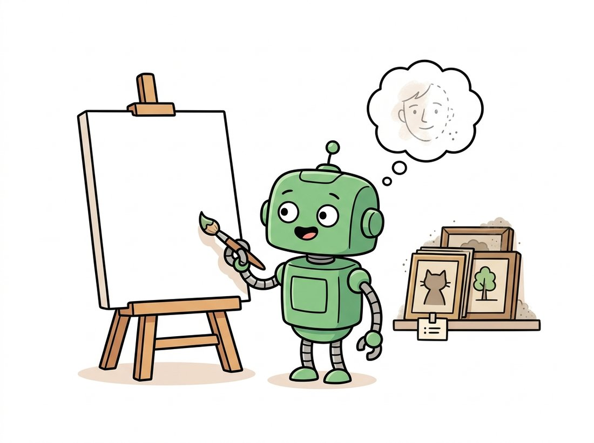
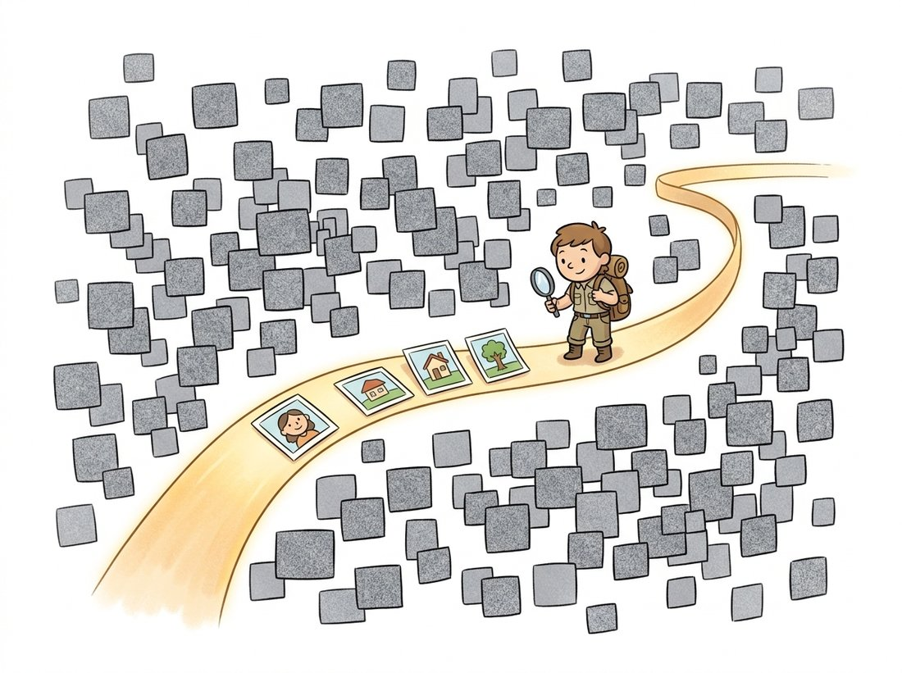

"A classifier and I were arguing. It said: tell me what is in the photo and I will tell you it is a cat. I said: tell me nothing, and I will hand you a cat that never existed. We are not the same. It got the easier job."
A Slightly Overconfident Generative Model
A discriminative model learns the boundary between answers given an image, the conditional $p(y \mid \mathbf{x})$. A generative model learns the images themselves, the distribution $p(\mathbf{x})$, and can therefore produce new ones. That sounds like a small change of notation, moving the image from the right of the conditioning bar to the left, but it changes the difficulty of the problem by orders of magnitude. To classify a photo a model needs to capture only the few bits that separate cat from dog. To generate a photo it must capture everything: lighting, geometry, texture, the statistics of fur and the way shadows fall, every correlation that makes an arrangement of pixels look real rather than like static. This section makes the distinction precise, confronts the dimensionality that makes $p(\mathbf{x})$ hard, introduces the manifold of natural images that all of Part IV is secretly about, and lists the capabilities that fall out for free once you can model the data distribution.
You arrive at this section having spent three parts of the book building discriminative models. Every classifier, detector, and segmenter you trained answered a question about an image that was handed to you. Now the image stops being the input and becomes the thing to be produced. This is the conceptual pivot of the entire generative part, and getting the framing right will pay off in every chapter that follows. We will define the two model types side by side, count the dimensions of the space a generator must conquer, see why almost all of that space is empty, and end with the concrete payoffs that motivate the whole enterprise. The next section, Section 30.2, then surveys the five families that attack $p(\mathbf{x})$ by different routes. The illustration below captures the whole pivot in one image: the job stops being to read a picture and becomes to imagine one.

1. Two Ways to Slice a Joint Distribution Beginner
Start from the joint distribution $p(\mathbf{x}, y)$ over images $\mathbf{x}$ and labels $y$. There are two ways to use it, and they correspond exactly to the two model types. A discriminative model learns the conditional $p(y \mid \mathbf{x})$ directly: given the pixels, what is the probability of each label? It never needs to know how images are distributed, only how to carve up the input space into label regions. A generative model learns $p(\mathbf{x})$, or the full joint $p(\mathbf{x}, y)$, which means it must model how the data itself is distributed. The two are linked by the chain rule and Bayes' rule:
A discriminative model takes the first factorization and learns only $p(y \mid \mathbf{x})$, treating $p(\mathbf{x})$ as someone else's problem. A generative classifier (such as a Gaussian mixture or a naive Bayes model) takes the second, learns $p(\mathbf{x} \mid y)$ and the prior $p(y)$, and recovers the label posterior by Bayes' rule. For pure generation, we drop $y$ entirely and model $p(\mathbf{x})$, the marginal over images. The crucial observation is that a model of $p(\mathbf{x})$ contains strictly more information than a model of $p(y \mid \mathbf{x})$: the former can draw samples, the latter cannot. Figure 30.1.1 contrasts the two geometrically.
To separate cats from dogs a model needs only the handful of features that distinguish them; everything else about the image can be ignored. To generate a cat it must get everything right, because a single implausible region (a melted ear, a sixth whisker, an impossible reflection) betrays the fake. This is why a small CNN can classify ImageNet to high accuracy with a few million parameters, while a generator that produces convincing ImageNet samples needs far more capacity and far more careful training. Modeling $p(\mathbf{x})$ is not a relabeling of classification; it is a strictly larger problem, and the rest of this part is the toolkit for it.
2. The Curse of Pixel Space Intermediate
To feel why $p(\mathbf{x})$ is hard, count the dimensions. A single color image of height $H$, width $W$, and three channels is a point in $\mathbb{R}^{3HW}$. For a small $224 \times 224$ RGB image that is $3 \times 224 \times 224 = 150{,}528$ dimensions. A generative model must place a probability density over that entire space. If we naively discretized each of the $150{,}528$ values to its $256$ possible byte settings, the number of distinct images would be $256^{150528}$, a number so large that writing it out would exhaust the atoms in the observable universe many times over. The model has to assign almost all of its probability mass to the infinitesimal fraction of those arrangements that look like real photographs.
The following snippet makes the scale tangible by sampling pure noise, what a point chosen uniformly at random from pixel space actually looks like, and contrasting it with how few such draws will ever resemble anything.
# Count the dimensions of pixel space for a small RGB image, then draw one
# uniformly random point from it to see what an "average" image actually is.
# The point: real photos occupy a vanishing fraction of this space.
import numpy as np
H, W, C = 224, 224, 3
dim = H * W * C
print(f"pixel-space dimension: {dim:,}") # pixel-space dimension: 150,528
# A point chosen uniformly at random from [0,255]^dim is "an image" too.
rng = np.random.default_rng(0)
random_image = rng.integers(0, 256, size=(H, W, C), dtype=np.uint8)
# Its per-channel histogram is flat: it is structureless static, not a photo.
print("mean:", random_image.mean().round(1), " std:", random_image.std().round(1))
# mean: 127.5 std: 73.9 <- exactly what uniform noise predicts
# The volume of "looks like a photograph" is a vanishing fraction of the whole.
# Modeling p(x) means concentrating density on that fraction.dim computation confirms a 224-by-224 RGB image is a point in 150,528 dimensions; the uniformly random random_image drawn with rng.integers has the flat mean near 127.5 and standard deviation near 73.9 of pure static. The set of arrangements that read as real photographs is an unimaginably thin sliver of the whole, and that sliver is exactly what a generative model must learn to inhabit.If you tried to generate art by drawing $256^{150528}$ images uniformly at random and keeping the ones that looked good, you would produce television static until the heat death of the universe, then a bit more static. The entire field of generative modeling is, at heart, an elaborate scheme to avoid that particular waiting room.
This is the curse of dimensionality in its most extreme form: as the number of dimensions grows, the volume of the space explodes, points become almost uniformly far apart, and any finite dataset covers a vanishing fraction of the whole, so notions like distance and density that work well in two or three dimensions become nearly useless. The reason generative modeling is tractable at all is that natural images do not fill their space. They lie on (or very near) a much lower-dimensional surface inside it, the manifold of natural images, and the entire job of a generative model is to discover and describe that surface.
3. The Manifold of Natural Images Intermediate
The manifold hypothesis says that real data of a given type, photographs of faces, of streets, of handwritten digits, does not scatter through its high-dimensional ambient space but concentrates on a smooth, connected surface of far lower intrinsic dimension. A photograph cannot have arbitrary independent pixels: neighboring pixels are correlated, edges are continuous, lighting is globally consistent, objects obey geometry. Each such constraint removes degrees of freedom. The result is that a face image, nominally a point in $150{,}528$ dimensions, can in practice be described by a few hundred numbers: pose, identity, expression, lighting, background. Those few hundred numbers are the intrinsic coordinates of the face manifold. The illustration below makes the picture vivid: a sea of static with one thin shelf where actual photographs sit.

This picture, sketched in Figure 30.1.2, is the quiet protagonist of the whole part. The latent space we build in Section 30.3 is an attempt to parameterize this manifold directly, to find coordinates so that moving smoothly in latent space moves smoothly along the manifold of real images. The score of Section 30.4 is the gradient that points back toward the manifold from any off-manifold noise point, which is exactly what lets diffusion models in Chapter 33 walk a noise sample back onto the sheet. Holding the manifold picture in mind turns most of generative modeling from a bag of tricks into one coherent story.
Who: a small team building a visual quality-control system for a specialty textile mill. Situation: they needed to flag defective fabric on a production line, but defects were rare and endlessly varied (snags, dye blooms, weave faults nobody had catalogued). Problem: a supervised defect detector, the discriminative tool from Chapter 23, needs labeled examples of every defect type, and the team had almost none, while normal fabric was abundant. Decision: they reframed the task generatively. Train a model of $p(\mathbf{x})$ on the plentiful normal-fabric images only, then flag any patch the model assigns low probability (or reconstructs poorly) as anomalous, regardless of defect type. This is anomaly detection by density: a defect is simply an image the data distribution did not expect. Result: the generative model caught defect categories that had never appeared in any label set, because it was never asked to recognize defects, only to know what normal looked like. Lesson: when the interesting events are rare, diverse, or unlabeled but the normal case is abundant, modeling $p(\mathbf{x})$ and watching for low-probability inputs beats trying to enumerate and label every failure. The generative framing answered a question the discriminative framing could not even pose.
4. What Modeling p(x) Buys You Beginner
Once a model holds $p(\mathbf{x})$, a striking range of capabilities becomes available from the single learned object. They divide into three families. First, sampling: draw a fresh $\mathbf{x} \sim p(\mathbf{x})$ and you have a new image that never existed, the core act of generation. Second, density evaluation: compute or estimate $p(\mathbf{x})$ for a given image and you can detect anomalies (low-probability inputs), compress (assign short codes to likely images), and compare models by held-out likelihood. Third, conditional inference: condition on partial or corrupted observations and sample the rest, which is exactly inpainting, super-resolution, denoising, and colorization, the classical restoration tasks of Chapter 7 reborn as draws from a conditional $p(\mathbf{x}_{\text{missing}} \mid \mathbf{x}_{\text{observed}})$.
The conditional case deserves emphasis because it unifies tasks that looked unrelated in earlier parts of the book. Inpainting fills missing pixels; super-resolution fills the high-frequency detail a low-resolution image lacks; denoising removes corruption; colorization fills the missing chroma channels. All four are the same operation under the generative lens: observe part of an image and sample the rest from the conditional distribution the generative model defines. We will see in Chapter 35 that controllable editing is this same conditional sampling with the conditioning made richer (a mask, a sketch, a text prompt). The toy below illustrates the simplest version, conditional sampling from a known two-dimensional density, so the idea is concrete before we scale it to images.
# A toy "data distribution": a ring of points (the manifold) in 2-D.
# Modeling p(x) here means knowing the ring; unconditional sampling draws on it,
# and conditional sampling observes one coordinate and completes the other.
import numpy as np
def sample_ring(n, radius=1.0, noise=0.05, rng=None):
rng = rng or np.random.default_rng(0)
theta = rng.uniform(0, 2 * np.pi, size=n) # position along the manifold
r = radius + rng.normal(0, noise, size=n) # small off-manifold spread
return np.stack([r * np.cos(theta), r * np.sin(theta)], axis=1)
data = sample_ring(2000)
print("data shape:", data.shape) # data shape: (2000, 2)
# Unconditional sample: just draw from p(x).
fresh = sample_ring(5)
# Conditional sample: observe x1 (say the left half) and complete x2.
# Given x1 = -0.5, the ring allows two completions: x2 = +/- sqrt(1 - x1^2).
x1 = -0.5
x2_options = np.array([+np.sqrt(1 - x1**2), -np.sqrt(1 - x1**2)])
print("completions of x1=-0.5:", x2_options.round(3)) # completions: [ 0.866 -0.866]sample_ring function draws fresh points on the manifold (unconditional sampling); fixing x1 = -0.5 and solving for x2_options observes part of a point and completes the rest, the same operation that becomes inpainting and super-resolution on real images. Note that conditioning on x1 leaves two valid completions, the generative analogue of an ambiguous restoration.The toy above hand-codes a known distribution. For real images you do not write $p(\mathbf{x})$ by hand; you load a model that has already learned it. With Hugging Face diffusers, sampling from a generative model trained on millions of images is four lines:
# Sample from a model that has already learned p(x) over a face dataset.
# from_pretrained downloads the trained weights; one pipeline call runs the
# full reverse sampling loop and returns a brand-new face image.
from diffusers import DDPMPipeline
pipe = DDPMPipeline.from_pretrained("google/ddpm-celebahq-256").to("cuda")
image = pipe(num_inference_steps=50).images[0] # a fresh, never-seen face
image.save("sample.png")diffusers. DDPMPipeline.from_pretrained downloads a diffusion model that has already learned $p(\mathbf{x})$ over a face dataset; the single pipe(num_inference_steps=50) call runs the entire 50-step reverse sampling loop and returns a fresh, never-seen face. The library hides the model definition, training loop, noise schedule, and sampler that a from-scratch version would spell out.Those four lines replace a model definition, a training loop over a large dataset, a noise schedule, and a sampler, easily several hundred lines plus days of GPU time, all of which diffusers packages behind from_pretrained. The from-scratch mechanics live in Chapter 33; the point here is only that "a model of $p(\mathbf{x})$" is a concrete, downloadable object you can sample from today.
A live debate in 2024 to 2026 is whether modeling $p(\mathbf{x})$ in pixel space is the right objective at all. Pixel likelihood spends most of its bits on imperceptible high-frequency detail, which is why high-likelihood models do not always look best (a tension Section 30.5 formalizes). The joint-embedding predictive architectures (I-JEPA and V-JEPA, Assran et al., 2023 to 2024) argue for modeling structure in a learned representation space rather than pixel space, and latent diffusion (Rombach et al., 2022) already does its generative modeling in a compressed latent rather than on raw pixels, the design that powers Stable Diffusion. Meanwhile flow matching (Lipman et al., 2023) and consistency models (Song et al., 2023) reframe what "modeling the distribution" should optimize for, trading exact likelihood for sampling speed. The question the field is still circling is the one this section opened with: which $\mathbf{x}$, raw pixels or a learned code, should $p(\mathbf{x})$ be a distribution over?
5. Reading the Map Ahead Beginner
You now have the framing that the rest of Part IV builds on. Generation means modeling the distribution of the data rather than a boundary over it; that distribution lives in a colossal pixel space but concentrates on a thin manifold; and once learned it unlocks sampling, density evaluation, and conditional completion in one stroke. The natural next question is how, concretely, one represents and fits $p(\mathbf{x})$. There is no single answer, which is the point of the next section: five families have each found a different tractable handle on the intractable object $p(\mathbf{x})$. Section 30.2 lays them out side by side so you can see what each gives up and what each gains.
For each of the following, state whether it is fundamentally discriminative (learns $p(y \mid \mathbf{x})$) or generative (requires a model of $p(\mathbf{x})$ or a conditional thereof), and justify in one sentence: (a) flagging fraudulent product photos that look unlike anything in the catalogue, (b) labeling traffic signs, (c) filling a hole left where a watermark was removed, (d) deciding whether two photos show the same person, (e) producing a plausible high-resolution version of a thumbnail. For any you marked generative, name the conditional distribution being sampled.
Download the MNIST training set (or any small image dataset). Run PCA on the flattened images and plot the cumulative explained variance against the number of principal components. Report how many components are needed to retain 95 percent of the variance, and compare that number to the ambient dimension (784 for MNIST). Write two sentences connecting your result to the manifold hypothesis: why is the 95-percent number so much smaller than 784, and what does that gap suggest about how a generative model could parameterize the data?
Reread the Key Insight and the textile-mill practical example. Argue, in a short paragraph, why a generative model used for anomaly detection might assign high probability to a smooth, blurry image that contains no recognizable content. What does this reveal about the difference between "high $p(\mathbf{x})$" and "looks like a real photograph"? Use your answer to predict one failure mode you would watch for when deploying a density-based anomaly detector, and relate it to the likelihood-versus-quality tension previewed in the Research Frontier callout.